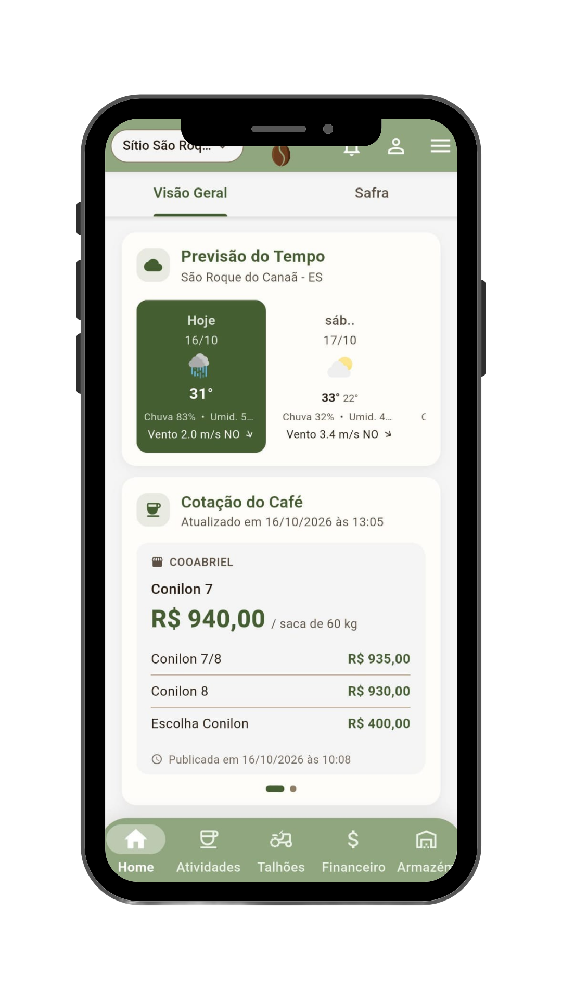
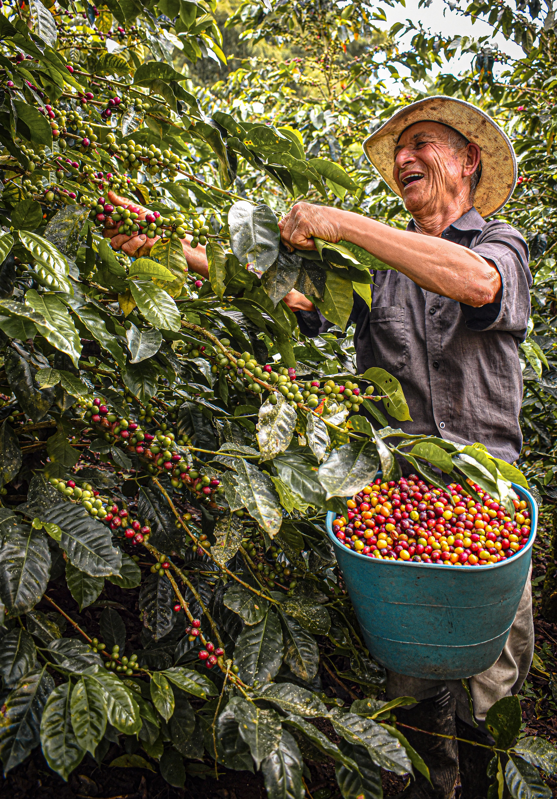

Venda no momento certo
Com o acompanhamento sempre atualizado, o produtor identifica os melhores momentos para fazer a venda do seu café.
Sysgrano
Com o Sysgrano você controla talhões, safra, custos e colheita em um só lugar, com mais organização, menos papel e decisões muito mais seguras.

Do plantio à venda, o Sysgrano reúne em um só lugar tudo o que o produtor precisa para decidir melhor e produzir com mais rentabilidade.
Com o acompanhamento sempre atualizado, o produtor identifica os melhores momentos para fazer a venda do seu café.
Acompanhe tudo o que entra e sai da propriedade, evitando perdas e compras sem necessidade.
O produtor consegue saber exatamente quanto custa produzir o seu café.
Saiba o que fazer no dia a dia: poda, adubação, colheita e secagem, tudo organizado em um só lugar.
Compare o rendimento de cada talhão a cada colheita para entender quais manejos trouxeram melhor resultado e ajustar o planejamento futuro.
Gere seus relatórios de forma rápida e precisa, a fim de mostrar os resultados obtidos em cada etapa.

O Sysgrano foi desenvolvido por estudantes de TSI do Ifes – Campus Santa Teresa, com apoio da Fapes e do Incaper, para auxiliar o cafeicultor na gestão da propriedade. O aplicativo permite registrar tarefas de campo, organizar um calendário de manejo com atividades como adubação, poda, pulverização, colheita e secagem, além de registrar compras de insumos e acompanhar os preços da saca de café. Assim, o produtor consegue planejar as atividades da lavoura, acompanhar sua rotina e identificar melhores momentos para comercializar sua produção, reunindo informações importantes em um só lugar.
Baixar o appConheça as organizações que acreditam no projeto e ajudam a torná-lo possível.
Não perca mais tempo com cadernos e planilhas. Baixe o Sysgrano agora, cadastre sua fazenda de forma rápida e simples e tenha acesso imediato aos inúmeros benefícios de nosso app.
Acesse o manual do aplicativo Sysgrano para aprender a utilizá-lo, tirar dúvidas, e muito mais!
Acessar Manual de Instruções